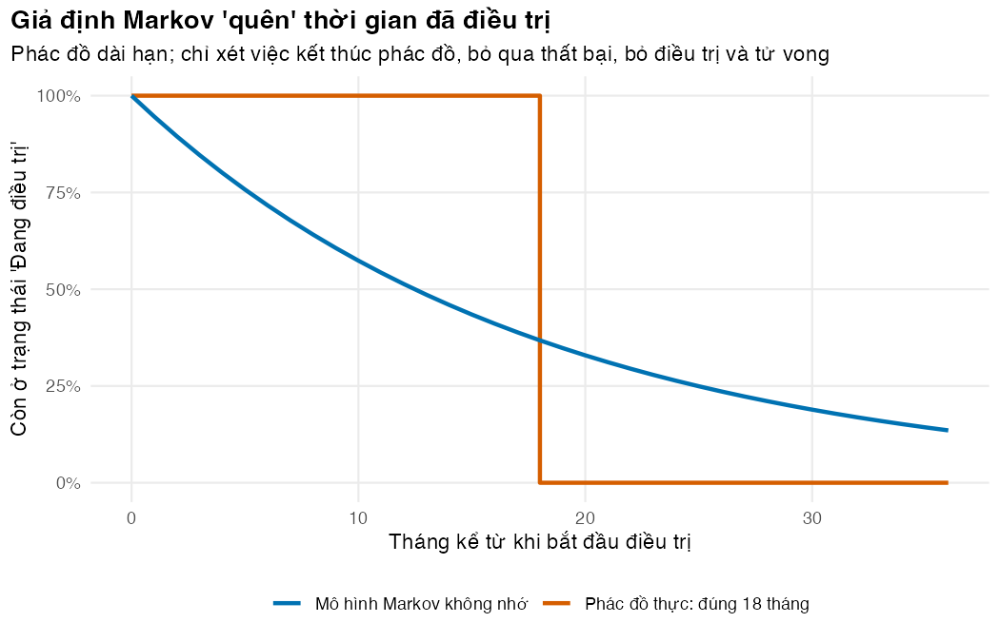

Biến lộ trình điều trị lao kháng thuốc thành trạng thái, chu kỳ và ma trận chuyển
Vì sao bạn nên quan tâm?
Một người bệnh lao kháng thuốc theo phác đồ dài hạn phải uống thuốc có giám sát trực tiếp (DOT) gần như mỗi ngày trong 18 tháng, và theo lịch theo dõi thì mỗi tháng lại tái khám, xét nghiệm đờm. Chỉ riêng tiền thuốc và theo dõi của cả đợt là khoảng 22.4 triệu VNĐ, bằng 4.2 tháng lương tối thiểu vùng I (Chính phủ 2025); với phác đồ ngắn 9 tháng là 12.8 triệu, với BPaLM 6 tháng là 10.5 triệu. Nhưng hóa đơn của đợt đầu chưa phải là tất cả: ai bỏ dở hay thất bại có thể phải điều trị lại, và hậu quả kéo dài nhiều năm. Bài này dựng bộ khung trạng thái để đếm đủ những hậu quả đó, bước đầu để trả lời: Chương trình Chống lao nên dùng phác đồ nào?
Mục tiêu học tập
Sau bài này, bạn có thể:
Giải thích khi nào cây quyết định không còn đủ và cần mô hình chuyển trạng thái (state-transition model).
Chuyển lộ trình điều trị lao đa kháng/kháng rifampicin (MDR/RR-TB), kể cả điều trị lại, thành một tập trạng thái loại trừ lẫn nhau và đầy đủ.
Viết ma trận chuyển (transition matrix) trong R và kiểm tra tính hợp lệ của nó.
Phát biểu giả định Markov và chỉ ra nó sai ở đâu khi phác đồ có thời gian cố định.
Ý chính
Mô hình chuyển trạng thái theo dõi một đoàn hệ giả định qua các chu kỳ (cycle). Ở mỗi thời điểm, mỗi người ở đúng một trạng thái.
Cây quyết định (M01) hợp với biến cố xảy ra nhanh và một lần. Lao kháng thuốc thì khác: bỏ điều trị (lost to follow-up), điều trị lại, tái phát và tử vong trải dài nhiều năm.
Ma trận chuyển \(P\): hàng là trạng thái xuất phát, cột là trạng thái đến, mỗi hàng cộng lại bằng 1.
Một chu kỳ là một phép nhân \(s_t = s_{t-1}P\). Cả mô hình chỉ là phép nhân lặp lại.
Trạng thái phải đồng nhất: người trong cùng trạng thái có cùng chi phí, thỏa dụng và nguy cơ. Vì thế Thất bại và Bỏ điều trị là hai trạng thái riêng.
Vòng lặp (Thất bại → Điều trị lại → Thất bại) là chuyện thường trong mô hình Markov; cây quyết định phải vẽ lại từng nhánh.
Giả định Markov (“không nhớ”): bước tiếp theo chỉ phụ thuộc trạng thái hiện tại. Với phác đồ cố định, giả định này sai; Bài 4 sửa bằng trạng thái đường hầm (tunnel state).
Nội dung
Câu hỏi chính sách
Trong 4,814 người bệnh lao kháng rifampicin điều trị toàn quốc năm 2021–2022, 71.2% điều trị thành công, 13.3% bỏ điều trị và 7.8% tử vong trong điều trị. Phác đồ ngắn toàn thuốc uống có bedaquiline (9–11 tháng) đạt 76.2% thành công; phác đồ dài hạn 18–20 tháng có odds kết cục bất lợi cao gấp 1.56 lần (T. M. P. Nguyen và c.s. 2026). Trong khi đó, WHO ước tính Việt Nam có khoảng 9,400 người mắc mới lao kháng rifampicin mỗi năm (World Health Organization 2026).
Phác đồ thứ ba là BPaLM: 6 tháng bedaquiline, pretomanid, linezolid và moxifloxacin. Trong kết quả cuối của thử nghiệm TB-PRACTECAL, kết cục bất lợi sau 72 tuần là 12% với BPaLM so với 41% với chăm sóc chuẩn (Nyang’wa và c.s. 2024). BPaLM có trong hướng dẫn của WHO từ năm 2022 (Nyang’wa và c.s. 2024; World Health Organization 2025); Bộ Y tế ban hành hướng dẫn chẩn đoán, điều trị lao mới tháng 1/2024 (Bộ Y tế 2024), và theo SCDI, BPaL/M có trong hướng dẫn này và đã được triển khai ở 21 tỉnh, thành (SCDI 2023).
Câu hỏi của module: theo quan điểm hệ thống y tế (health system perspective), với một đoàn hệ bắt đầu điều trị ở tuổi 45 (T. L. H. Nguyen và c.s. 2026), phác đồ nào trong ba phác đồ có chi phí-hiệu quả, và câu hỏi đang đặt ra trên thực tế: chuyển từ phác đồ ngắn 9 tháng sang BPaLM có đáng không?
Vì sao không dùng cây quyết định?
Hậu quả của điều trị kéo dài cả đời. Trong một đoàn hệ MDR/RR-TB tại Việt Nam, tỷ suất có đợt lao tiếp theo là 10.3/1000 người-năm, và tử vong sau điều trị cao gấp 3.0 lần so với người tiếp xúc trong hộ gia đình (MacLean và c.s. 2026). Người thất bại được điều trị lại, có thể thất bại lần nữa; người bỏ điều trị có thể quay lại sau vài năm. Muốn vẽ bằng cây, ta cần một nhánh cho mỗi tháng và mỗi vòng điều trị; cây phình to rất nhanh. Mô hình chuyển trạng thái lặp lại cùng một cấu trúc ở mọi chu kỳ, nên gọn hơn nhiều (Sonnenberg và Beck 1993; Briggs và Sculpher 1998).
Từ lộ trình điều trị đến trạng thái
flowchart LR T["Đang điều trị<br/>(OnTx)"] --> C["Khỏi bệnh<br/>(Cured)"] T --> F["Thất bại/tái phát<br/>(Failed)"] T --> L["Bỏ điều trị<br/>(LTFU)"] F --> R["Điều trị lại<br/>(ReTx)"] L --> R R --> C R --> F R --> L C -.->|kịch bản| F F --> C L --> C T --> D["Tử vong<br/>(Dead)"] R --> D C --> D F --> D L --> D
flowchart LR
T["Đang điều trị<br/>(OnTx)"] --> C["Khỏi bệnh<br/>(Cured)"]
T --> F["Thất bại/tái phát<br/>(Failed)"]
T --> L["Bỏ điều trị<br/>(LTFU)"]
F --> R["Điều trị lại<br/>(ReTx)"]
L --> R
R --> C
R --> F
R --> L
C -.->|kịch bản| F
F --> C
L --> C
T --> D["Tử vong<br/>(Dead)"]
R --> D
C --> D
F --> D
L --> D
Mỗi trạng thái còn sống còn có một mũi tên quay lại chính nó (ở lại thêm một chu kỳ); sơ đồ bỏ qua cho gọn. Mũi tên nét đứt Khỏi bệnh → Thất bại/tái phát chỉ dùng trong kịch bản, vì tỷ số tử vong chuẩn hóa (SMR) sau điều trị đã gồm cả tử vong do lao tái phát (Bài 2).
Trạng thái
Ý nghĩa
Vì sao tách riêng
Đang điều trị
phác đồ đầu tiên (dài hạn, ngắn hoặc BPaLM)
chi phí thuốc và theo dõi riêng của từng phác đồ
Điều trị lại
một đợt phác đồ dài hạn sau thất bại, hoặc khi quay lại sau bỏ điều trị
chi phí của phác đồ dài hạn; kết cục kém hơn đợt đầu của phác đồ ngắn
Khỏi bệnh
hết lao hoạt động: hoàn thành điều trị, hoặc tự khỏi
thỏa dụng cao hơn; tử vong vẫn cao hơn dân số chung
Thất bại/tái phát
lao hoạt động, chờ điều trị lại
một lượt khám mỗi tháng; tử vong cao như lao không điều trị; phần lớn được điều trị lại sau vài tháng
Bỏ điều trị
đã ngừng thuốc liên tục từ hai tháng trở lên, theo định nghĩa của WHO (Adamashvili và c.s. 2022)
không chi phí y tế; tử vong thấp hơn Thất bại; ít người quay lại
Tử vong
trạng thái hấp thụ (absorbing state)
không chi phí, không thỏa dụng
Tập trạng thái phải loại trừ lẫn nhau và đầy đủ (mutually exclusive and exhaustive): không ai ở hai trạng thái cùng lúc, không ai “lọt ra ngoài”. Thất bại và Bỏ điều trị đều là lao chưa được chữa, nhưng bằng chứng cho thấy chúng khác nhau về tử vong và về khả năng quay lại điều trị (Bài 2), nên phải tách. Ba giả định cấu trúc cần nói thẳng. Thứ nhất, mọi đợt điều trị lại dùng phác đồ dài hạn và là một trạng thái không nhớ: cách làm gọn, đổi lại thời gian điều trị lại không chính xác (Bài 4). Thứ hai, người bệnh có thể điều trị lại nhiều lần; vòng lặp tự dừng khi họ khỏi hoặc tử vong. Thứ ba, Khỏi bệnh gộp người hoàn thành điều trị với người tự khỏi, và cả hai dùng chung SMR sau điều trị.
Chu kỳ, khung thời gian và ma trận chuyển
Chu kỳ dài 1 tháng, vì ba phác đồ kéo dài 6, 9 và 18 tháng (Bài 2 bàn kỹ cách chọn). Khung thời gian (time horizon) là trọn đời: mô phỏng đến tuổi 100, tức 660 chu kỳ. Với \(K\) trạng thái, ma trận chuyển là
Chuỗi Markov không nhớ một người đã ở trạng thái hiện tại bao lâu. Nếu xác suất rời “Đang điều trị” mỗi tháng là hằng số, thời gian điều trị có phân phối hình học: nhiều người “xong” rất sớm, nhiều người kéo dài quá hạn. Phần Thực hành đo sai lệch này. Trong kinh tế y tế, “mô hình Markov” thường dùng để chỉ mô hình chuyển trạng thái đoàn hệ thời gian rời rạc (Siebert và c.s. 2012).
Thực hành
Đoạn code đầu nạp hàm dùng chung, dữ liệu chung của khóa học (ngưỡng, bảng sống, giá) và hàm mô hình. m02_params() đọc params/mdrtb.csv rồi bổ sung các giá trị lấy từ kb/_shared; read_params() bên trong dừng ngay nếu một tham số không phải minh họa mà thiếu nguồn. Kiểm tra: không có thông báo lỗi.
# Vietnamese text in figures needs a UTF-8 locale (Rscript may start in the "C" locale)if (!isTRUE(l10n_info()[["UTF-8"]])) invisible(Sys.setlocale("LC_CTYPE", "en_US.UTF-8"))source("../_shared/R/helpers.R")source("../_shared/R/vn_data.R") # course-wide values: threshold, wages, life table, pricessource("code/model.R")library(ggplot2)p <-m02_params() # params/mdrtb.csv + shared values (complete_params())inp <-prepare_inputs(p)ctx <-vn_context()
Ba chiến lược cần so sánh: thời gian, giá thuốc mỗi tháng, tỷ lệ thành công cuối điều trị mà mô hình dùng, và tổng tiền thuốc cộng theo dõi của cả đợt quy ra số tháng lương tối thiểu vùng I. Kiểm tra: phác đồ càng dài thì cả đợt càng đắt.
# The three first-line strategies compared in this module: duration and drug cost per coursestrategies <-data.frame(regimen = REGIMENS,label = REGIMEN_LABELS[REGIMENS],months = inp$duration[REGIMENS],drug_month =sapply(REGIMENS, function(g) drug_cost(p, g)),success_programme =1-sapply(REGIMENS, function(g) sum(inp$q_unfav[[g]])))strategies$drug_course <- strategies$months * strategies$drug_monthstrategies$monitor_course <- strategies$months * p$c_monitorstrategies$course_in_min_wages <- (strategies$drug_course + strategies$monitor_course) / ctx$min_wage_region1_monthprint(strategies[, -1], digits =3, row.names =FALSE)
Giá thuốc lấy từ bảng giá của Global Drug Facility và Treatment Action Group (ITPC-EECA 2025; McConnell 2025); chi phí theo dõi lấy từ giá dịch vụ BHYT (Bài 3). Riêng tiền thuốc, BPaLM rẻ hơn phác đồ ngắn cho cả đợt (7.09 so với 7.72 triệu VNĐ), dù đắt hơn mỗi tháng.
Khai báo sáu trạng thái. Tên tiếng Anh ngắn dùng trong code, tên tiếng Việt dùng cho hình và bảng. Kiểm tra: chỉ Tử vong là trạng thái hấp thụ.
states_tab <-data.frame(state =c("OnTx", "ReTx", "Cured", "Failed", "LTFU", "Dead"),ten_viet =c("Đang điều trị", "Điều trị lại", "Khỏi bệnh", "Thất bại/tái phát", "Bỏ điều trị", "Tử vong"),absorbing =c(FALSE, FALSE, FALSE, FALSE, FALSE, TRUE))states_tab
state ten_viet absorbing
1 OnTx Đang điều trị FALSE
2 ReTx Điều trị lại FALSE
3 Cured Khỏi bệnh FALSE
4 Failed Thất bại/tái phát FALSE
5 LTFU Bỏ điều trị FALSE
6 Dead Tử vong TRUE
build_P_simple() tạo ma trận chuyển một tháng cho phác đồ dài hạn ở tuổi bắt đầu. Cách tính từng xác suất học ở Bài 2; ở đây ta chỉ đọc ma trận. Kiểm tra: check_tm() không báo lỗi và rowSums() toàn bằng 1.
# Transition matrix for the long regimen, one-month cycle, at the starting ageP_long <-build_P_simple(inp, "long", age = p$age_start)round(P_long, 4)
check_tm(P_long) # every entry in [0, 1] and every row sums to 1rowSums(P_long)
OnTx ReTx Cured Failed LTFU Dead
1 1 1 1 1 1
# Arrows in the diagram = non-zero cells off the diagonal (Cured -> Failed is 0 in the base case)n_arrows <-sum(P_long >0&row(P_long) !=col(P_long))n_arrows
[1] 15
Đọc hàng OnTx: mỗi tháng 5.4% người đang điều trị chuyển sang Khỏi bệnh, 1.0% bỏ điều trị và 92.8% ở lại. Hàng Failed cho thấy mỗi tháng 28% người thất bại bắt đầu điều trị lại, còn hàng LTFU chỉ có 0.65% người bỏ điều trị quay lại. Hàng Dead chỉ có số 1 trên đường chéo.
Nhân vectơ trạng thái với ma trận để tiến một chu kỳ, lặp 12 lần để được một năm. Kiểm tra: tổng vectơ luôn bằng 1 (stopifnot).
# Cohort of 1 (= 100%) starts on treatment; one cycle is one matrix products0 <-initial_state(colnames(P_long))s1 <- s0 %*% P_longs12 <- s0for (t in1:12) s12 <- s12 %*% P_longround(rbind(month_0 = s0, month_1 = s1[1, ], month_12 = s12[1, ]), 4)
stopifnot(abs(sum(s12) -1) <1e-12) # nobody is lost or created
Sau 12 tháng, mô hình cho 44.6% đoàn hệ đã khỏi. Trong thực tế, không ai hoàn thành phác đồ 18 tháng trước tháng thứ 18. Đây là dấu hiệu đầu tiên của giả định không nhớ.
Để thấy rõ, ta chỉ xét việc kết thúc phác đồ (bỏ qua thất bại, bỏ điều trị, tử vong). Với tỷ suất kết thúc không đổi 1/18 mỗi tháng, thời gian điều trị theo phân phối mũ. Kiểm tra: đường cong mô hình so với “bậc thang” thực tế.
# Under the Markov assumption the monthly chance of staying on treatment is the# same every month, so time on treatment follows a geometric distribution.# Look at completion only (ignore failure, LTFU and death): constant rate 1/D.rate_complete <-1/ p$dur_longmonths <-0:36on_tx_markov <-exp(-rate_complete * months)left_early <-1-exp(-rate_complete * p$dur_bpalm) # "finish" within the BPaLM durationstill_on_at_end <-exp(-rate_complete * p$dur_long) # still "on treatment" at month Dround(c(left_early = left_early, still_on_at_end = still_on_at_end), 3)
left_early still_on_at_end
0.283 0.368
# Reality: without an event, everybody stays exactly dur_long monthson_tx_real <-ifelse(months < p$dur_long, 1, 0)lab_markov <-"Mô hình Markov không nhớ"memo <-rbind(data.frame(month = months, share = on_tx_markov, curve = lab_markov),data.frame(month = months, share = on_tx_real, curve =paste0("Phác đồ thực: đúng ", p$dur_long, " tháng")))fig_memo <-ggplot(memo, aes(month, share, colour = curve)) +geom_step(data = memo[memo$curve != lab_markov, ], linewidth =1) +geom_line(data = memo[memo$curve == lab_markov, ], linewidth =1) +scale_colour_manual(values = pal_course[c(1, 2)], name =NULL) +scale_y_continuous(labels =function(x) paste0(100* x, "%")) +labs(x ="Tháng kể từ khi bắt đầu điều trị", y ="Còn ở trạng thái 'Đang điều trị'",title ="Giả định Markov 'quên' thời gian đã điều trị",subtitle ="Phác đồ dài hạn; chỉ xét việc kết thúc phác đồ, bỏ qua thất bại, bỏ điều trị và tử vong") +theme_course()save_fig(fig_memo, "l01-memoryless.png")

Giả định Markov và thời gian điều trị thực tế
Theo mô hình đơn giản, 28.3% người “xong” phác đồ dài hạn chỉ sau 6 tháng, và 36.8% vẫn “đang điều trị” ở tháng thứ 18. Trung bình vẫn đúng 18 tháng, nhưng phân bố thì sai. Chi phí thuốc, thỏa dụng và thời điểm chiết khấu đều phụ thuộc phân bố đó.
Mẹo thực hành
Đặt tên hàng, cột của ma trận bằng tên trạng thái và truy cập bằng tên (P["OnTx", "Cured"]). Khi thêm trạng thái mới, như ReTx ở module này, chỉ số không bị lệch.
Gọi check_tm() ngay sau khi tạo mọi ma trận; gọi check_trace() sau mọi vết đoàn hệ (Markov trace).
Đếm mũi tên liền nét trên sơ đồ và số ô khác 0 ngoài đường chéo của \(P\): ở đây đều là 15. Lệch nhau là có lỗi.
Nếu hình hiện ô vuông thay cho chữ có dấu, R đang chạy ở locale không phải UTF-8. Dòng Sys.setlocale() đầu mỗi script xử lý việc này.
Lỗi thường gặp
Nhân sai chiều: viết P %*% s thay vì s %*% P. Với ma trận có tổng hàng bằng 1, vectơ trạng thái là vectơ hàng nhân bên trái. Dấu hiệu: tổng vectơ khác 1 sau một chu kỳ.
Gõ tay xác suất ở lại rồi làm tròn: hàng không còn cộng bằng 1. Luôn tính đường chéo bằng 1 trừ tổng các ô còn lại.
Trạng thái không đồng nhất: gộp Thất bại với Bỏ điều trị dù tử vong và khả năng quay lại khác nhau; hoặc gộp tháng điều trị thứ 1 với tháng thứ 17.
Cửa ra khỏi Tử vong: hàng Dead phải chỉ có số 1 ở đường chéo.
Bài tập
(Dễ) Tạo ma trận cho phác đồ ngắn và BPaLM bằng build_P_simple(), kiểm tra chúng và so sánh xác suất ở lại “Đang điều trị” với phác đồ dài hạn. Vì sao khác?
Lời giải
# Exercise 1: matrices of the other two regimens — check them and compare the diagonalP_short <-build_P_simple(inp, "short", age = p$age_start)P_bpalm <-build_P_simple(inp, "bpalm", age = p$age_start)check_tm(P_short)check_tm(P_bpalm)round(c(stay_long = P_long["OnTx", "OnTx"], stay_short = P_short["OnTx", "OnTx"],stay_bpalm = P_bpalm["OnTx", "OnTx"]), 4)
Phác đồ ngắn hơn nên tỷ suất kết thúc 1/D lớn hơn: xác suất ở lại là 83.2% với BPaLM và 87.2% với phác đồ ngắn, so với 92.8% của phác đồ dài hạn.
(Vừa) Dưới giả định Markov, số chu kỳ kỳ vọng ở trạng thái \(i\) là \(1/(1-p_{ii})\). Tính cho ba phác đồ. Vì sao kết quả nhỏ hơn thời gian phác đồ?
Lời giải
# Exercise 2: expected months in OnTx under the memoryless assumptionround(c(long =1/ (1- P_long["OnTx", "OnTx"]), short =1/ (1- P_short["OnTx", "OnTx"]),bpalm =1/ (1- P_bpalm["OnTx", "OnTx"])), 1)
long short bpalm
13.9 7.8 6.0
Phác đồ dài hạn cho 13.9 tháng, ngắn hơn 18 tháng, vì người bệnh còn rời trạng thái do thất bại, bỏ điều trị hoặc tử vong.
(Khó) Ma trận cơ bản (fundamental matrix) \(N = (I - Q)^{-1}\), với \(Q\) là phần của \(P\) giữa các trạng thái còn sống, cho số chu kỳ kỳ vọng ở mỗi trạng thái. Tính tuổi thọ còn lại kỳ vọng. Vì sao con số này không hợp lý?
Lời giải
# Exercise 3: fundamental matrix N = (I - Q)^-1 of the time-homogeneous chain.# Q = transitions among the non-absorbing states; N[i, j] = expected cycles in j# when starting in i. Row sums / 12 = life expectancy in years (no ageing!).alive <-c("OnTx", "ReTx", "Cured", "Failed", "LTFU")Q <- P_long[alive, alive]N <-solve(diag(length(alive)) - Q)round(N["OnTx", ] /12, 2) # years spent in each state
round(sum(N["OnTx", ]) /12, 1) # total: implausibly long, because nobody ages here
[1] 79.3
Tuổi thọ còn lại là 79.3 năm, tức sống tới khoảng 124 tuổi, vì tử vong nền bị giữ ở mức của tuổi 45 mãi mãi (và \(N\) ứng với khung thời gian vô hạn). Bài 4 đưa lão hóa vào mô hình.
Tài liệu tham khảo
Adamashvili, N., D. Baliashvili, G. Kuchukhidze, A. D. Salindri, R. R. Kempker, H. M. Blumberg, N. Lomtadze, Z. Avaliani, và M. J. Magee. 2022. “Low BMI increases all-cause mortality rates in patients with drug-resistant TB”. The International Journal of Tuberculosis and Lung Disease 26 (4): 326–33. https://doi.org/10.5588/ijtld.21.0450.
Nguyen, Thi Lien Ha, Binh Hoa Nguyen, Manisha Yapa, Thu Anh Nguyen, Qingbin Li, Hai Dang Vu, Greg J. Fox, và Quoc Dat Vu. 2026. “Quality of life scores using SF-12 and SF-36v2 questionnaires for patients with multidrug-resistant tuberculosis in Vietnam”. Health and Quality of Life Outcomes 24 (1): 33. https://doi.org/10.1186/s12955-026-02479-y.
Nguyen, Thi Mai Phuong, Van Luong Dinh, Binh Hoa Nguyen, Thi Thanh Thuy Hoang, Viet Nhung Nguyen, Steven Callens, và Tom Decroo. 2026. “From trials to programmatic scale-up: treatment outcomes of rifampicin-resistant tuberculosis during transition to short oral regimens in Vietnam (2021–2022)”. International Journal of Infectious Diseases 163: 108222. https://doi.org/10.1016/j.ijid.2025.108222.
Nyang’wa, Bern-Thomas, Catherine Berry, Emil Kazounis, Ilaria Motta, Nargiza Parpieva, Zinaida Tigay, Ronelle Moodliar, và c.s. 2024. “Short oral regimens for pulmonary rifampicin-resistant tuberculosis (TB-PRACTECAL): an open-label, randomised, controlled, phase 2B–3, multi-arm, multicentre, non-inferiority trial”. The Lancet Respiratory Medicine 12 (2): 117–28. https://doi.org/10.1016/S2213-2600(23)00389-2.
Siebert, Uwe, Oguzhan Alagoz, Ahmed M. Bayoumi, Beate Jahn, Douglas K. Owens, David J. Cohen, và Karen M. Kuntz. 2012. “State-transition modeling: a report of the ISPOR-SMDM Modeling Good Research Practices Task Force-3”. Medical Decision Making 32 (5): 690–700. https://doi.org/10.1177/0272989X12455463.
Sonnenberg, F. A., và J. R. Beck. 1993. “Markov models in medical decision making: a practical guide”. Medical Decision Making 13 (4): 322–38. https://doi.org/10.1177/0272989X9301300409.